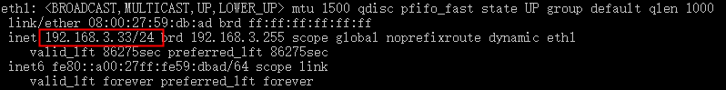
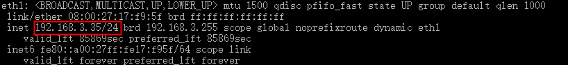
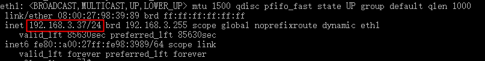
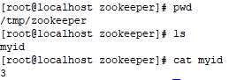
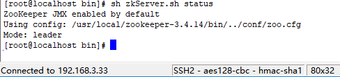
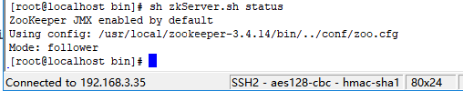

This chapter will demonstrate the steps to set up a three-node Zookeeper server cluster.
Prerequisites: Create three virtual machine environments and install the Java Development Kit (JDK). You can use VM or vagrant+virtualbox to build a centos/ubuntu environment. This case is based on a Windows 10 host system using vagrant+virtualbox to build a centos7 environment. The same applies if you directly use cloud servers or physical machines.

Step 1:Prepare three Zookeeper environments and download the Zookeeper tarball according to the previous tutorial. The three-node cluster centos environments are as follows:
Machine 1: 192.168.3.33

Machine 2: 192.168.3.35

Machine 3: 192.168.3.37

Tip: To view the IP address, you can useifconfigcommand.
Step 2:Separately modify the zoo.cfg configuration information
The roles of Zookeeper's three ports
- 1、2181: Provide services to the client
- 2、2888: Used for communication between machines in the cluster
- 3、3888: Used for electing the leader
pressserver.id = ip:port:portModify the cluster configuration file:
Add the following configuration at the end of the zoo.cfg file on the three virtual machines:
server.1=192.168.3.33:2888:3888 server.2=192.168.3.35:2888:3888 server.3=192.168.3.37:2888:3888
Configure myid separately according to the id and corresponding address.
vim /tmp/zookeeper/myid
After the configuration in this case is completed, the query shows as follows:
For IP 192.168.3.33, configure myid on the machine. Because this machine was started in standalone mode in the previous tutorial, version-2 appears. It doesn't matter if it doesn't.

For IP 192.168.3.35, configure myid on the machine.


Step 3: Start the cluster
Before starting, you need to disable the firewall (in production, open the corresponding ports).
systemctl stop firewalld
Start 192.168.3.33 and view the log. At this time, errors in the log are normal because the other two machines have not started yet and cannot be connected for the time being.

After the other two machines are started separately, view the status of the three machines:
IP 192.168.3.33

IP 192.168.3.35

IP 192.168.3.37

Finally, it shows that the cluster setup is successful! Mode: leader represents the master node, follower represents the slave node, one leader and two followers.